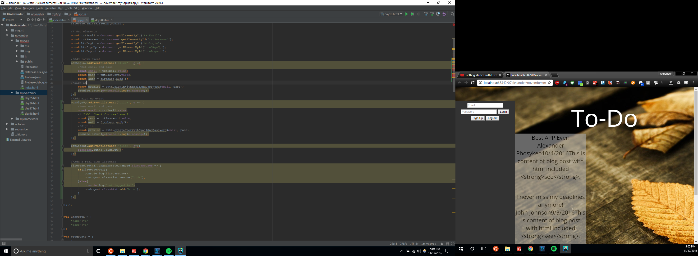

Firebase is working on login, but I'm still having a lot of trouble, I'm getting a lot errors and I don't understand why. The errors aren't preventing me from testing the index, but the errors are a bother to me.
Will implement FireBase for Sign Up authorization and storage, still only have temporary storage and Sign Up
Login will have show user specific lists and tasks, maybe will implement custom background images or colors
To use FireBase Database to have unique sign ups and users
Not sure how I will implement GeoLocation for my web application, maybe to check GeoLocation for Daylight savings according area, or maybe time zones
To implement AJAX to sync Lists, tasks, completed tasks with server side
User testing completed for prototype, but still need to do user testing for FireBase implementation
Currently my main focus is to transition everything to work with FireBase. I'm not sure if I should scrap everything and rebuild everything from the ground up as to avoid any conflicting code. Or should I keep trying to meld everything together. It's frustrating to have to throw away code that I took forever to implement. Hopefully I will at least getting FireBase up and running the way I would like over this weekend.